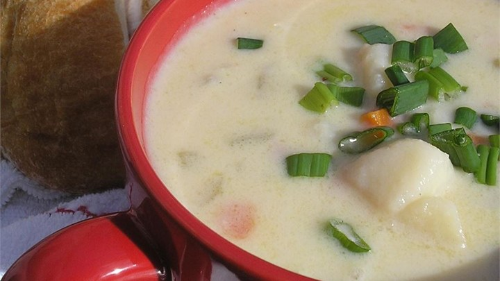

Ham and Potato Soup
- Prep Time: 20 minutes
- Cook Time: 25 minutes
- Ready in: 45 minutes
Ingredients
- 3 1/2 cups peeled and diced potatoes
- 1/3 cup diced celery
- 1/3 cup finely chopped onion
- 3/4 cup diced cooked ham
- 3 1/4 cups water
- 2 tablespoons chicken bouillon granules
- 1/2 teaspoon salt, or to taste
- 1 teaspoon ground white or black pepper, or to taste
- 5 tablespoons butter
- 5 tablespoons all-purpose flour
- 2 cups milk
Directions
- Combine the potatoes, celery, onion, ham and water in a stockpot. Bring to a boil, then cook over medium heat until potatoes are tender, about 10 to 15 minutes. Stir in the chicken bouillon, salt and pepper.
- In a separate saucepan, melt butter over medium-low heat. Whisk in flour with a fork, and cook, stirring constantly until thick, about 1 minute. Slowly stir in milk as not to allow lumps to form until all of the milk has been added. Continue stirring over medium-low heat until thick, 4 to 5 minutes.
- Stir the milk mixture into the stockpot, and cook soup until heated through. Serve immediately.
Credits for this recipe go to Ellie11, from allrecipes.com